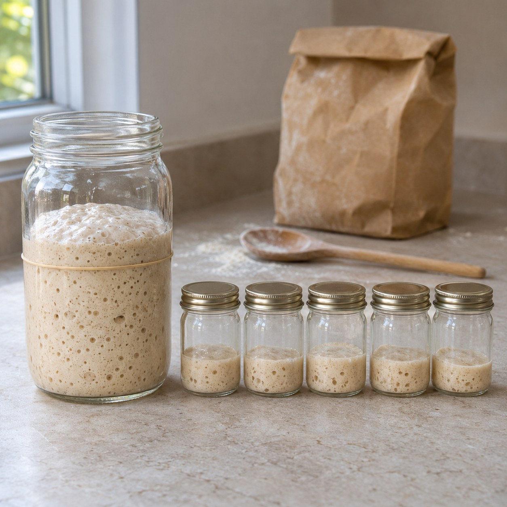
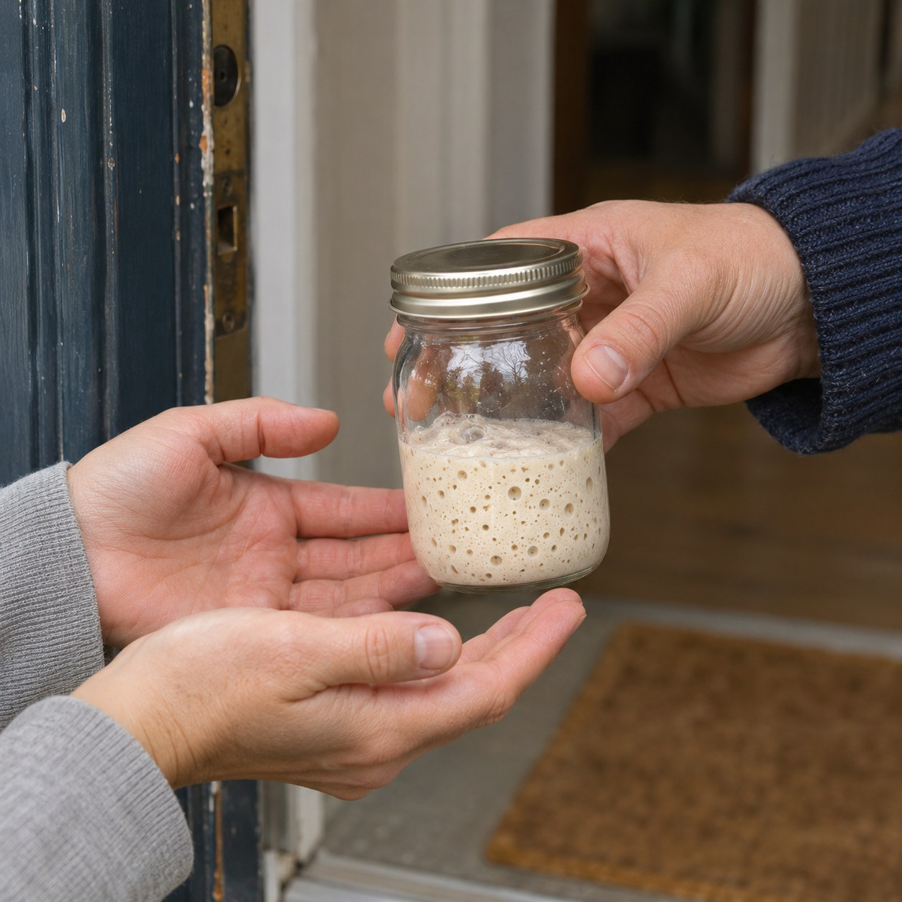

The Mother


In a jar on the kitchen counter there is a mother. That is what bakers call it: flour and water left to sour, alive with yeasts that came in from the air, the flour and the baker's own hands. Feed it and it rises. Forget it and it dies.
To keep it, you have to halve it. Every day, before it is fed, half comes out of the jar and is thrown away. Otherwise the jar overflows, the food runs short and the whole thing turns too sour to live. The mother survives by losing half of itself, daily, on purpose.
I stopped throwing that half away. Each morning it goes into a small clean jar, and I give it to whoever will take it. A neighbour. Someone waiting at a bus stop. Someone who said they had never baked. Most of them feed it. Some of them halve it too, and give their half away.
So which one is the mother now? Plutarch says the Athenians kept the ship of Theseus for centuries, taking out each rotten plank and putting in new timber, until philosophers argued over whether it was still the same ship. My jar has been halved so many times that hardly anything in it was there at the start. But its trouble is the opposite of the ship's. It is not that nothing of the original is left. It is that the original is everywhere, in kitchens I will never see, and each of them has the same claim.
Rirkrit Tiravanija once turned a gallery's back office into a kitchen and gave away curry, and the giving was the work. A meal ends when it is eaten. This gift does not end. It asks only to be fed, and to be divided again.
Somewhere tonight, in a kitchen I have never seen, someone is pouring half of it out and wondering who to give it to.